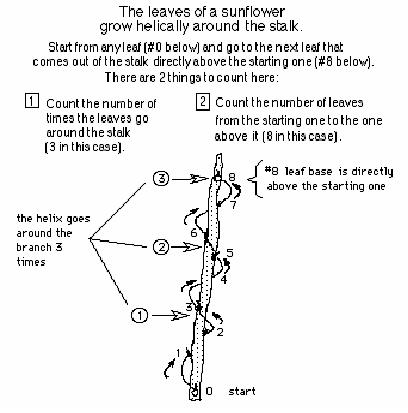

The Fibonacci numbers/Chapter 7
See sample problems from Chapter 7 and answers
Nanako came from Japan with her Mom to Champaign to study with Don for a week each of the summers of 2007 and 2008. One of the topics they worked on was the sequence of Fibonacci numbers from a sunflower stalk, their ratios and the limit of the infinite sequence.
Natalie came from CA to study with Don for a week.

From the stalk of a sunflower, Don helped Natalie find the number of leaves that grew in a helix to a point directly above the starting one (8). Natalie also counted the number of times the leaves went around the stalk to that point (3). These are both Fibonacci numbers. He listed the Fibonacci sequence: 1, 1, 2, 3, 5, then asked Natalie to continue. She saw the sequence as adding 2 numbers to get the next one. So she wrote 1,1, 2, 3, 5, 8, 13, 21, 34, 55, 89, 144, 233, 377... Then Don asked her to get the ratio (comparing by division) of bigger number to smaller 1/1=1, 2/1=2, 3/2 = 1 1/2 = 1.5, 5/3=1 2/3 = 1.666... (Don did this by long division). Natalie did a couple more and the rest was left for homework.
_______________________________________
Don gave her Mom the special graph paper for building the Golden Rectangle and showed her where to place the compasses to draw the circular arcs and build the new squares (see chapter 7).
Don also gave Mom the special graph paper for building the snowflake curve and showed her where to start it (see chapter 4).
At the end of this session they all hugged and went outside to take some photographs before Natalie and her Mom drove to Chicago's O'Hare airport. Before leaving, Natalie said, "I will always remember this week with you." Natalie's Mom also signed her up for a month of Don's 'Math By EMail' program, insuring their work together would continue.
Natalie's Mom wrote in an email to Don after she returned to CA: "I personally believe that you are one of the rarest teachers on earth. Thank you for being."
Geoffrey graphs the ratios of the Fibonacci numbers and writes a program to get the infinite sequence which has a limit.
Jamie an 8th grader, solved the quadratic equation x2-x-1=0, by iteration, and he and Don wrote a program to do this on a TI84 Plus.
Comparing the spirals of fibonacci numbers, the Nautilus shell, and The equal-tempered Musical scale
See Cristobal Vila's beautiful short movie "Nature by Numbers" at http://www.etereaestudios.com/docs_html/nbyn_htm/intro.htm
See Xah Lee's site on curves- especially the equiangular spiral
See Lori and Don's Nautilus shell applet which shows the growth of the spiral shell from 1 to 3.2 in 360o and the constant angle of 79.5o between the tangent to the curve and the radius.
See also Golden Triangle, Pentagon, Sunflower head and Powers of Phi, on the MAP
Tara writes a story "A Quest For The Sacred Golden Pineapple, Pine Cone and Artichoke"
See also Dr. Ron Knott's great webite for much more on the Fibonacci numbers.